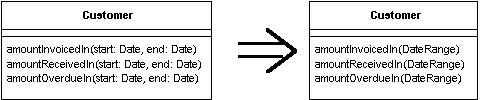

Introduce Parameter Object
You have a group of parameters that naturally go together.
Replace them with an object.

For more information see page
295
of
Refactoring
| Refactoring Home |
| Alphabetical List |